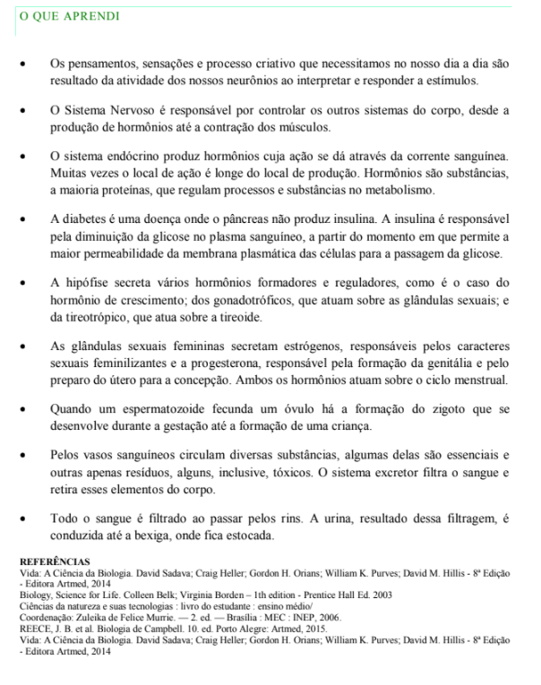

Capítulo 5
INDÚSTRIA CALÇADISTA: A PARTE BIOLÓGICA DO PROCESSO CRIATIVO
QuestãoA Indústria Calçadista se ocupa de algo essencial para o nosso cotidiano, os sapatos nos conferem proteção e conforto para executar tarefas do dia a dia, mas, para além disso, são itens de moda cobiçados por muitos.
Tanto os modelos mais simples quanto os mais incomuns precisam ser pensados e projetados antes de se tornarem reais (figura 48). Esse processo criativo se desenvolve no nosso cérebro.
Você já se questionou como os pensamentos e ideias são formados?
Contextualizando
Podemos ver as batidas de um coração, um pulmão se encher e se esvaziar de ar. Entretanto não podemos ver um pensamento se formar.
Nosso cérebro faz parte do sistema nervoso e realiza suas funções pela comunicação entre neurônios. Essa "conversa" entre as células desencadeia uma série de ações. Leia o trecho abaixo escrito por uma especialista no assunto:
"Consideramos que os neurônios são a base para o pensamento. Isto é, a unidade neural do pensamento são nossos neurônios, e o conjunto de neurônios ou a rede neural são os responsáveis por influenciar nossos comportamentos e por produzir processos cognitivos, como raciocínio, abstração, memória, atenção, entre outras funções.
Assim, podemos dizer que a integração dos sinais neuronais é que resulta na elaboração da atividade mental, que nada mais é do que nossos pensamentos. São as conexões neurais as responsáveis pela formação do pensamento.
Nosso córtex cerebral (a porção mais superficial do cérebro, conhecida também como substância cinzenta) desempenha os papeis principais do pensamento, pois é ali que eles são elaborados e se tornam conscientes.
Parece intuitivo e até contraproducente, mas você pode se perguntar: “mas a forma como as pessoas pensam é diferente?” (...)"
https://cienciadocerebro.wordpress.com/2013/03/10/como-o-cerebro-pensa-e-onde-ocorre-o-pensamento/As redes neurais (neurônios conectados) formadas no cérebro são únicas e capazes de se moldar ao longo da vida. Isso torna o pensamento, o processo criativo, etc. muito complexos, afetados tanto por características do corpo quanto do ambiente. Cada pessoa pensa de um jeito diferente e só podemos compreende-la a partir do que ela nos comunica.
O Sistema Nervoso humano se espalha por todo o corpo através de nervos e outros órgãos além do cérebro. É dessa forma que um pensamento como "preciso ir até ali" se transforma em contração dos músculos para movimentar das pernas.
O sistema nervoso é responsável por captar, interpretar e responder a estímulos do ambiente. Esses estímulos podem ser de qualquer ordem: algo que toca na nossa pele, um som, um cheiro, etc.
Ele é comumente subdividido em (figura 49): Sistema Nervoso Central (cérebro, medula espinhal e tronco encefálico) e Sistema Nervoso Periférico (nervos e gânglios nervosos).
Os neurônios são células exclusivas do sistema nervoso. Eles possuem uma forma característica em que do corpo celular se ramifica em diversas pequenas projeções (os dendritos) e uma longa projeção (o axônio) que, por sua vez, também se ramifica (figura 50).
Os neurônios funcionam como uma rede telefônica movida por eletricidade. Uma vez que o neurônio tenha coletado um sinal (estímulo) o corpo da célula transmite esse sinal na forma de estímulo elétrico pelo axônio até um outro neurônio. Os neurônios seguintes irão realizar o mesmo processo até que essa informação chegue a uma célula efetora (figura 51).
Por exemplo, quando tocamos em uma superfície muito quente (como uma panela) os danos causados às células queimadas dão um sinal. Os dendritos dos neurônios presentes nos nervos da nossa mão coletam esse sinal e transmitem a informação adiante (ao longo do nervo) até chegar na medula, onde está o corpo celular. No corpo celular se forma uma resposta que é encaminhada via axônio de volta à mão, mas dessa vez o impulso elétrico chega até os músculos do braço e mão (as células efetoras). A ordem é "contraia o músculo" e nós rapidamente retiramos a mão. Essa ação reflexa acontece em menos de um segundo.
A ação dos neurônios também induz a produção de hormônios.
SISTEMA ENDÓCRINO
O sistema endócrino, assim como o sistema nervoso, atua como regulador e integrador de diversas funções corporais realizadas por outros órgãos. No entanto, ao invés de neurônios, é formado por glândulas, e em vez de impulsos nervosos, a transmissão das informações é realizada por hormônios. Além disso, a ação do sistema endócrino é muito mais lenta que os impulsos nervosos, já que, viajando pela corrente sanguínea, os hormônios podem demorar alguns minutos para atingir seu destino.
VOCÊ SABE O QUE É DIABETES?
A diabetes é uma doença ocasionada pela falta ou pela não ação do hormônio chamado insulina. A insulina é um hormônio proteico produzido pelas células do pâncreas. Sua função é aumentar a permeabilidade da membrana plasmática de todas as células do corpo.
A diabetes é uma doença ocasionada pela falta ou pela não ação do hormônio chamado insulina. A insulina é um hormônio proteico produzido pelas células do pâncreas. Sua função é aumentar a permeabilidade da membrana plasmática de todas as células do corpo.
Existem dois tipos de diabetes. A diabetes do tipo 1, mais severa, ocorre quando as células produtoras do hormônio são completamente destruídas pelo próprio sistema de defesa de forma equivocada. Assim, a pessoa não fabrica mais a insulina e dependerá de doses diárias do hormônio durante toda sua da vida. Cerca de 5 a 10% dos diabéticos tem o tipo 1. Ocorre em crianças e adolescentes, mas pode aparecer na vida adulta, também. Requer que o diabético tenha controle sobre a sua alimentação e, principalmente, sobre a sua glicemia.
A diabetes do tipo 2 ocorre quando, mesmo produzindo insulina, esta não consegue se ligar a proteína da membrana impedindo as reações que permitem a entrada de glicose nas células. Em torno de 90% das pessoas diabéticas é esta a condição de doença. Afeta mais pessoas sedentárias e com sobrepeso. Em ambos os tipos existe uma pré-disposição genética, ou seja, ocorre em indivíduos ao longo das gerações em uma família.
O número de diabéticos no Brasil está crescendo. Em alguns casos, o diagnóstico demora, favorecendo o aparecimento de complicações. Pode ser que você ou alguém próximo tenha diabetes. Saiba mais e aprenda a conviver bem com a doença, transformando-a em mais um motivo para cuidar da saúde (figura 55).
A hipófise é considerada a glândula mãe ou chefe, pois secreta vários hormônios formadores e reguladores de outras glândulas (figura 56).
Ao ler a imagem acima, você deve ter notado uma estrutura peculiar: as gônadas. As gônadas são os órgãos onde se formam as células sexuais, porém são também glândulas endócrinas responsáveis pela produção dos chamados hormônios sexuais.
As gônadas femininas são os ovários e produzem principalmente os estrógenos e a progesterona (figura 57). Os estrógenos são responsáveis pelo surgimento das características sexuais secundárias femininas (desenvolvimento dos seios, modulação do corpo a partir da disposição de gorduras localizadas, etc) durante a puberdade. Além disso, atuam em conjunto com a progesterona na regulação dos ciclos ovariano e menstrual. Estimulam a formação e manutenção do endométrio, a camada interna do útero onde ocorre a implantação do embrião.
As gônadas masculinas são os testículos (figura 57) e produzem os hormônios masculinizantes ou andrógenos, sendo a testosterona o mais importante. Este hormônio é o responsável pelo surgimento das características sexuais masculinas secundárias (pelos corporais e faciais, timbre da voz, desenvolvimento muscular, etc.), além de atuar junto com o FSH estimulando a formação de espermatozoides.
PARA SABER MAIS...
SISTEMA REPRODUTOR
A reprodução humana também é controlada por hormônios, os gametas (espermatozoide e óvulo) são produzidos nas gônadas (figura 59) e se encontram durante o sexo. Desse encontro pode acontecer a fecundação e, consequentemente, a formação de um embrião, que se desenvolverá para dar origem a um nova pessoa.
Figura 59
Durante o sexo vários neurotransmissores são liberados no corpo contribuindo para a sensação de prazer.
Você já deve ter percebido que nosso sangue é repleto de substâncias diferentes, tudo circula por lá. Existe um conjunto de órgãos responsável por filtrar e eliminar todas as substâncias que inúteis ou perigosas, chamado sistema excretor.
O sangue passa pelos rins onde é filtrado. Aqueles elementos inúteis ou tóxicos são diluído em água, formando a urina, dali a urina é estocada na bexiga (figura 59).
De forma geral, podemos dizer que tudo no nosso corpo é controlado pelos sistemas nervoso e endócrino. Até mesmo nossos gostos e memórias passam em alguma medida por esses sistemas.
AÇÃO E REFLEXÃO
Discutimos ao longo desse capítulo alguns processos que acontecem no nosso sistema nervoso e que impactam na nossa forma de ver o mundo. As obras de arte tem o poder de estimular nossos sentidos. Cada pessoa tem sua própria interpretação de uma pintura, por exemplo, já que o processo neural que experimenta é único. Mas existem alguns elementos em comum. Algumas cores e formas transmitem sensações de calma ou agressividade. Oberve as obras de arte abaixo (figura 60):
Reflita: como você se sente ao olhar cada um dos quadros acima? Quais elementos da nossa história evolutiva podem contribuir com as sensações evocadas por eles?
